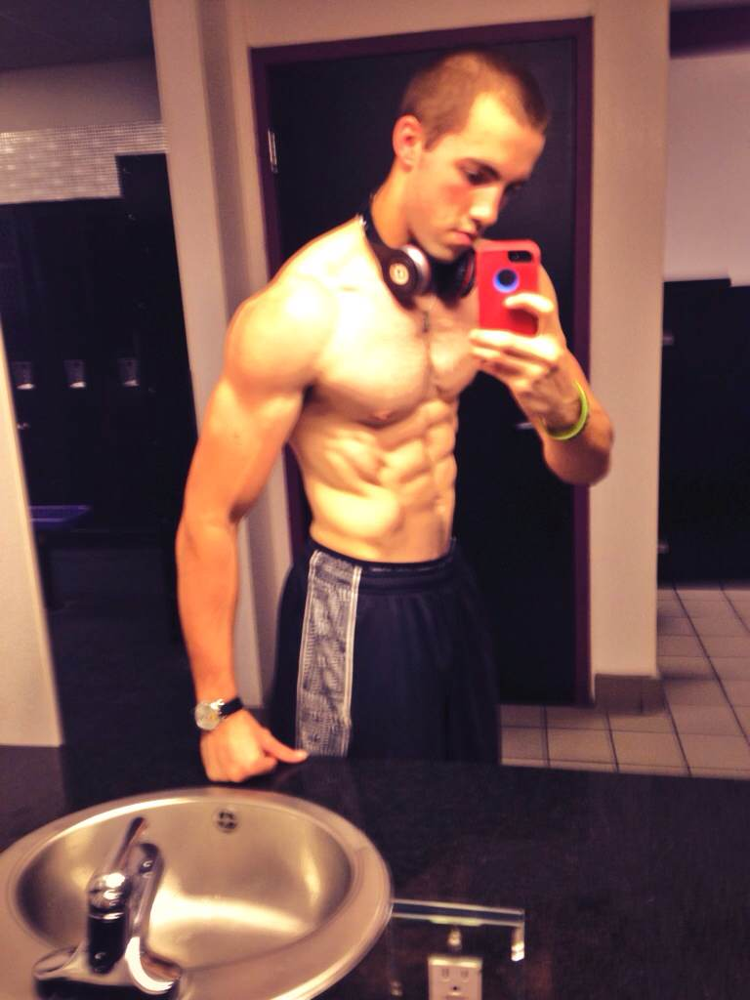

Fitness and Nutrition Coach
Specialized online fitness programs to help achieve your goals!
A representative part or a single item from a larger whole or group especially when presented for inspection or shown as evidence of quality. A representative part or a single item from a larger whole or group especially when presented for inspection or shown as evidence of quality. A representative part or a single item from a larger whole or group especially when presented for inspection or shown as evidence of quality. A representative part or a single item from a larger whole or group especially when presented for inspection or shown as evidence of quality
A representative part or a single item from a larger whole or group especially when presented for inspection or shown as evidence of quality. A representative part or a single item from a larger whole or group especially when presented for inspection or shown as evidence of quality. A representative part or a single item from a larger whole or group especially when presented for inspection or shown as evidence of quality. A representative part or a single item from a larger whole or group especially when presented for inspection or shown as evidence of quality
Sports and fitness have been a part of my life from an early age. I started working out in the gym at the age of 14 and I quickly realized that I had found my true passion. Growing up in the gym not only allowed me to achieve a great physique but also taught me all about running a fitness business. I worked as a maintenance manager at Gold`s Gym in Methuen, MA, throughout my high school balance, exercise, and gym obligations. I then decided to study Economics in college to study the theory behind entrepreneurship as I have gained a lot of practical experience! During college, I never lost my passion for fitness and was able to focus on my studies while working as a personal trainer and as a helper while building a new gym called "Answer is Fitness". I remember coaching clients, going to school, and sleeping in the gym many times to help with the installation of new equipment! After graduating from Merrimack College in 2007 with a degree in business management, I moved to North Attleboro, MA, and worked as general manager of the same gym I helped build. During that time, I realized it was time to fulfill my dream of revolutionizing the fitness industry and I launched ScottHermanFitness.com. Shortly after, I won a contest for Men's Health magazine for "Best Abs on the East Coast" which opened many doors for me in the modeling industry. The increased visibility allowed me to grow my business and brought me one step closer to achieving my goal of taking the fitness industry to the next level. With the rapidly increasing popularity of various social media platforms around the world, I have been able to use Facebook and YouTube as the best vehicles to bring my teachings to the world. Now, I am lucky to have a community of over 670,000 Hermans worldwide! I intend to continue to produce quality content and help make the world a healthier place, regardless of your goals or fitness level. Keeping in mind my core values, which led to the relaunch of SHF as MuscularStrength.com in 2015. I hope this rebranding will attract more fitness content creators to join us on our journey to teach fitness to the world and continue to drive the growth of our Community!
Scott Ruggieri
"Scott Herman Fitness helped me become who I always wanted to be, fit, strong and confident. I never thought it was possible to have a body like that. I've always been an athlete, but never in top shape. I eat what I want and don't try hard in the weight room. Around my freshman year of high school, I decided to make a change. I found Scott Herman Fitness through YouTube and started using his workouts. I follow his schedule every day, pay attention to what I eat and focus on the details. I want this BAD! With work, dedication and commitment, I made the best transformation of my life and I have Scott to thank. Watching his videos almost made me feel like he was there training with me and pushing me to the limit. I hope one day I will become a good personal trainer like you!" -Scott Ruggieri - Laconia NH, 19
Luke Sapsford
When I first started working something clicked that made me want more, for help I searched YouTube as a beginner looking for a workout and motivational videos. Then the channel was suggested to me. This channel is Scott Herman Fitness! I watch all the videos and apply them to my workout! My form is starting to improve, and so are the results! Scott has truly been an important role model for me and others like Nick Write and professional bodybuilders. Now I'm a serious gym rat who keeps improving with SHF nutrition tips and videos. If you want help improving your physique, follow Scott on his epic journey and make your own as I did! Is that okay? Thanks Scott, you the man! -Luke Sapsford - United Kingdom